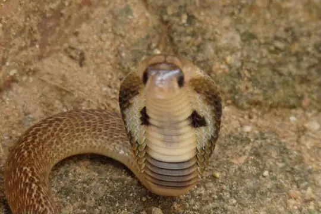
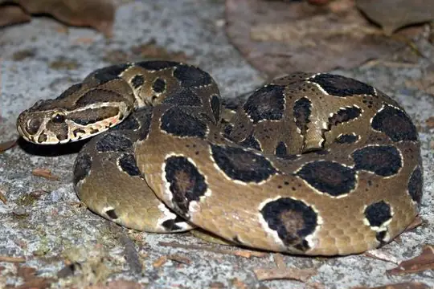
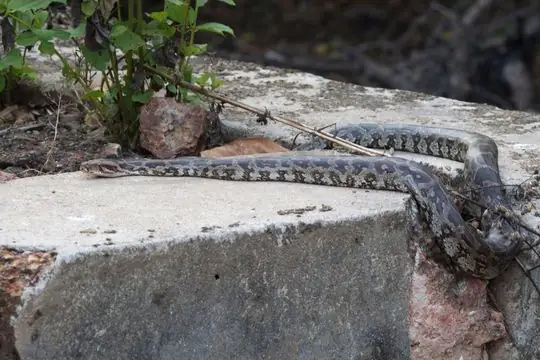
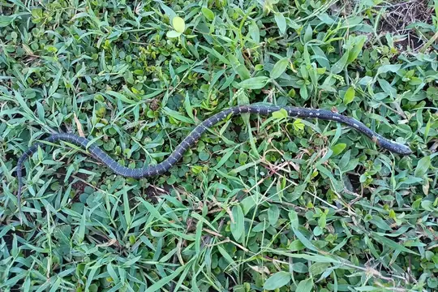

Snakes around Multan
Punjab, Pakistan · 30.20°N, 71.48°E
Multan is a city in Punjab, Pakistan. 20 snake species are recorded in Punjab in SnakeList.
- 20species
- 7venomous
- 13non-venomous
- 6families
These are the snakes of Punjab, not of Multan itself. SnakeList records snakes by state or province, not by city, so this page lists the 20 species recorded anywhere in Punjab, the state or province Multan is in (worked out from the city’s map position). Many of them may not live in or near the city.
Most widely recorded
The species here that have research-grade iNaturalist records in the most places across their whole range - not just in Punjab. That shows how often people have photographed them, not how many live here.
 Oriental RatsnakePtyas mucosa
Oriental RatsnakePtyas mucosa Chequered KeelbackFowlea piscator
Chequered KeelbackFowlea piscator Buff Striped KeelbackAmphiesma stolatum
Buff Striped KeelbackAmphiesma stolatum
Indian CobraNaja naja Common Wolf Snake (aulicus)Lycodon aulicus
Common Wolf Snake (aulicus)Lycodon aulicus
Russell's ViperDaboia russelii
Indian Rock PythonPython molurus
Common KraitBungarus caeruleus
Venomous and non-venomous
Venomous: 7Non-venomous: 13
5 are listed by SnakeList as dangerous to people: Common Krait Bungarus caeruleus, Indian Cobra Naja naja, Indian Rock Python Python molurus, Russell's Viper Daboia russelii, Sind Krait Bungarus sindanus.
The other venomous ones have mild venom: no serious bites to people are documented for them.
Snake families
Habitats (rough estimate)
How many of its living snakes have each kind of habitat in SnakeList’s estimate. That estimate comes from every country, state and province where each snake is recorded - not from a survey of Punjab, and not checked species by species.
Who described them
The scientists who first described its most widely recorded snakes, and when.
- Oriental Ratsnake Ptyas mucosa -
- Chequered Keelback Fowlea piscator -
- Buff Striped Keelback Amphiesma stolatum -
- Indian Cobra Naja naja -
- Common Wolf Snake (aulicus) Lycodon aulicus -
- Russell's Viper Daboia russelii - described by Shaw & Nodder in 1797 (under another genus name)
- Indian Rock Python Python molurus -
- Common Krait Bungarus caeruleus - described by Schneider in 1801 (under another genus name)
Names and dates come from SnakeList’s reviewed species accounts; the others are looked up on Wikidata (CC0) when this page opens.
Nearby cities
The closest cities in SnakeList’s city list, as the crow flies.
- Dera Ghazi Khan 82 km · Punjab, Pakistan
- Bahawalpur 91 km · Punjab, Pakistan
- Jhang Sadr 144 km · Punjab, Pakistan
- Sahiwal 164 km · Punjab, Pakistan
- Okara 201 km · Punjab, Pakistan
- Faisalabad 205 km · Punjab, Pakistan
- Chiniot 222 km · Punjab, Pakistan
- Rahim Yar Khan 228 km · Punjab, Pakistan
Other cities in Punjab
- Lahore
- Faisalabad
- Rawalpindi
- Gujranwala
- Rahim Yar Khan
- Bahawalpur
- Sargodha
- Sialkot
- Shekhupura
- Jhang Sadr
- Gujrat
- Kasur
- Dera Ghazi Khan
- Sahiwal
- Okara
All 20 species of Punjab
- Bar-necked Keelback Fowlea schnurrenbergeri
- Buff Striped Keelback Amphiesma stolatum
- Chequered Keelback Fowlea piscator
- Common Cat Snake Boiga trigonata venomous
- Common Krait Bungarus caeruleus venomous
- Common Wolf Snake (aulicus) Lycodon aulicus
- Diadem Snake Spalerosophis diadema
- Forskal Sand Snake Psammophis schokari venomous
- Glossy-bellied Racer Platyceps ventromaculatus
- Indian Cobra Naja naja venomous
- Indian Rock Python Python molurus
- Leith's Sand Snake Psammophis leithii venomous
- Loos Snake Oligodon taeniolatus
- Oriental Ratsnake Ptyas mucosa
- Red Sand Boa Eryx johnii
- Red-spotted Diadem Snake Spalerosophis arenarius
- Rough-tailed Sand Boa Eryx conicus
- Russell's Viper Daboia russelii venomous
- Sind Krait Bungarus sindanus venomous
- Sindh Awl-headed Snake Lytorhynchus paradoxus
No snake here matches that.